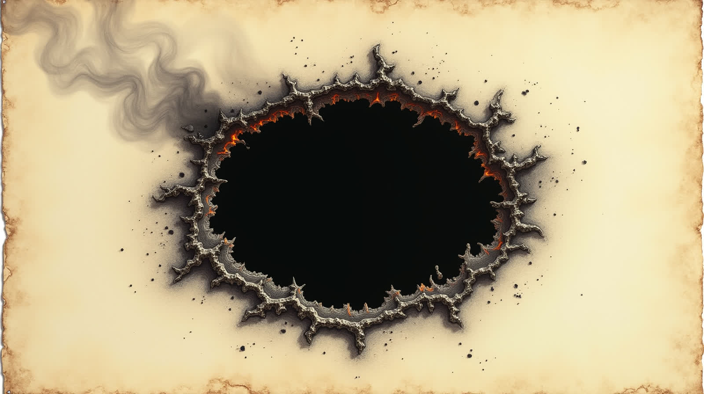

Věda, pot a sranda
Saunové ceremoniály — patnáct minut, tři písně a jedna otázka, na kterou se špatně odpovídá. Ke každému kniha, interaktivní simulace a hudba.

Ceremoniál k úplnému zatmění Slunce. Sto otázek, osm simulací, tři písně — a spor 19. století o to, z čeho Slunce doopravdy žije.